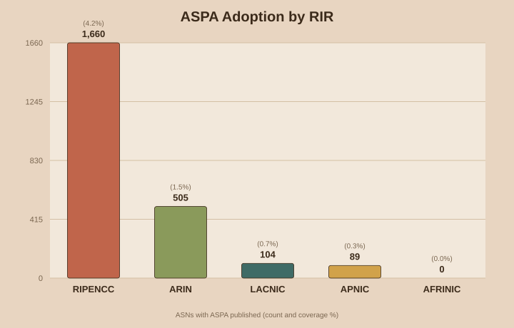
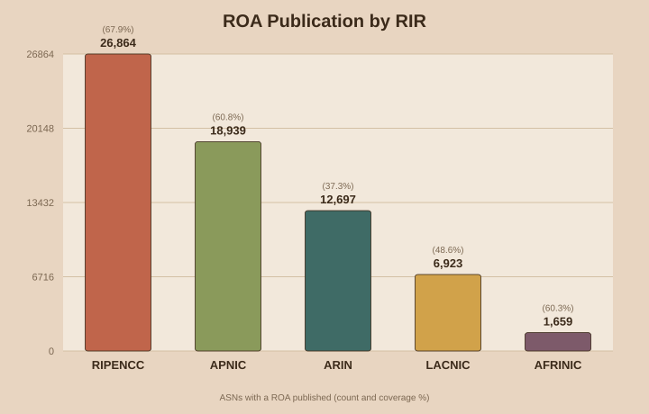
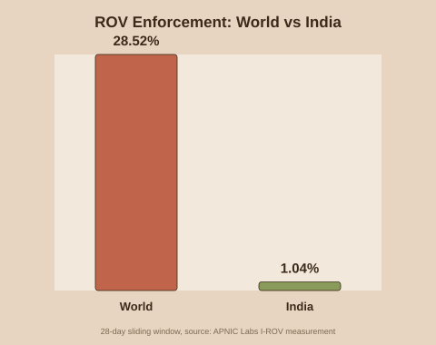
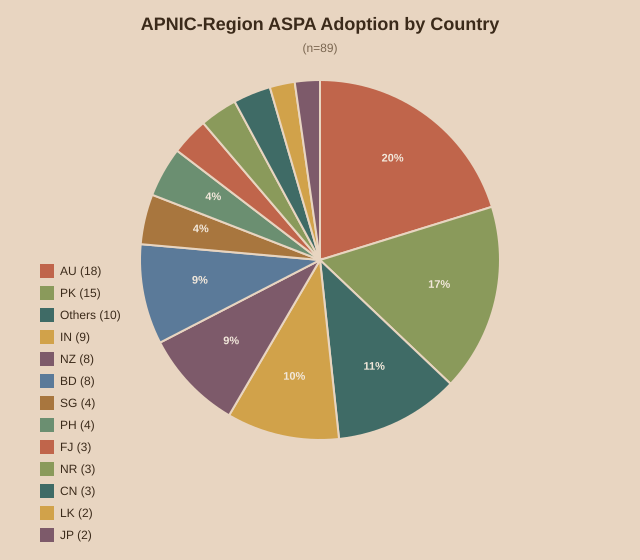
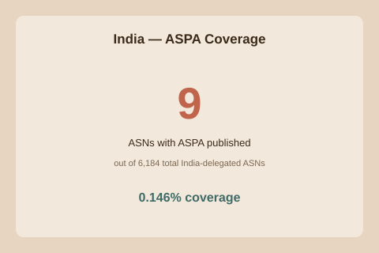

RPKI (Resource Public Key Infrastructure) lets an Autonomous System prove two things with a cryptographic signature instead of just trusting BGP announcements: that it's actually allowed to originate a given IP prefix, and that it's actually allowed to sit in the path as someone's transit provider. A ROA (Route Origin Authorization) covers the first case — it stops one network from announcing someone else's IP range by mistake or on purpose. An ASPA (Autonomous System Provider Authorization) covers the second — it stops route leaks, where a network accidentally forwards a route to the wrong upstream.
The Global Picture
As of this refresh, here is ASPA adoption across all five Regional Internet Registries:
| RIR | ASNs with ASPA | Total ASNs | Coverage |
|---|---|---|---|
| RIPENCC | 1,659 | 39,583 | 4.191% |
| ARIN | 503 | 34,059 | 1.477% |
| LACNIC | 107 | 14,246 | 0.751% |
| APNIC | 87 | 31,126 | 0.280% |
| AFRINIC | 0 | 2,752 | 0.000% |

ROA Publication — the Mature Baseline
Unlike ASPA, ROA (Route Origin Authorization) is well-established across every RIR. Here's the same RIR-by-RIR breakdown for ROA publication:
| RIR | ASNs with a ROA | Total ASNs | Coverage |
|---|---|---|---|
| RIPENCC | 26,864 | 39,583 | 67.868% |
| APNIC | 18,939 | 31,126 | 60.846% |
| ARIN | 12,697 | 34,059 | 37.279% |
| LACNIC | 6,923 | 14,246 | 48.596% |
| AFRINIC | 1,659 | 2,752 | 60.283% |

The gap between these numbers and the ASPA table above is the story: ROA has had over a decade to mature, while ASPA is still in its early-adopter phase across every RIR, APNIC included. Within APNIC specifically, 18,939 ASNs (60.846%) publish a ROA — worth keeping in mind when the APNIC region's ASPA numbers look small by comparison later in this post.
ROV — Is Anyone Actually Checking?
Publishing a ROA or ASPA only matters if networks downstream actually validate against it. ROV (Route Origin Validation) measures that missing piece — not what's published, but what's actually enforced. APNIC Labs runs a continuous global measurement of this using anycast beacon routes delivered to end-user devices via an ad-measurement network: one route is permanently RPKI-valid as a control, another is permanently RPKI-invalid, and APNIC tracks what fraction of a country's users can still reach the invalid one — those users are sitting behind networks that are not dropping invalid routes. (The exact prefixes used aren't publicly disclosed, deliberately — publishing them would let networks special-case just those routes rather than genuinely enforcing ROV everywhere. Full methodology: APNIC Labs, "How we measure". Worth noting: independent researchers have pointed out that relying on a single invalid test prefix gives only a partial view compared to testing many prefixes simultaneously — treat these numbers as a solid trend indicator rather than an exact figure.)

As of 2026-07-11, 28.52% of internet users globally sit behind networks enforcing ROV. That number matters when you get to the India section below.
The APNIC Region
Zooming into APNIC specifically — 87 ASNs out of 31,126 total APNIC-delegated ASNs (0.280%) currently publish an ASPA object.

| Country | ASNs |
|---|---|
| AU | 18 |
| PK | 15 |
| IN | 9 |
| NZ | 8 |
| BD | 8 |
| SG | 4 |
| NR | 3 |
| PH | 3 |
| CN | 3 |
| LK | 2 |
| FJ | 2 |
| JP | 2 |
| HK | 1 |
| TL | 1 |
| TO | 1 |
| WS | 1 |
| CA | 1 |
| VU | 1 |
| TH | 1 |
| ID | 1 |
| NP | 1 |
| KR | 1 |
India
9 of India's 6,184 APNIC-delegated ASNs (0.146%) currently publish ASPA. For ROA, the picture is far more mature: 2,936 ASNs (47.477%) publish a ROA.

| ASN | Organisation | Providers |
|---|---|---|
| AS9885 | National Knowledge Network | 4755, 9498, 11537, 20965, 23855, 24029, 24490, 55836 |
| AS38620 | National Knowledge Network | 55824 |
| AS136308 | Deenet Networks Private Limited | 9498, 9829, 55836 |
| AS148000 | National Knowledge Network | 7633, 9829, 9885, 45117, 55824, 142501, 142502, 148003 |
| AS148003 | National Knowledge Network | 4755 |
| AS149794 | Daryll Swer | 20473, 141253 |
| AS151704 | BHARATDC-AS | 4755, 55410, 137409, 154317, 214441 |
| AS154317 | VyomCloud | 151704, 214441 |
| AS154673 | INDIGO DATA SERVICES PRIVATE LIMITED | 136308, 142529 |
Closing Thoughts
These numbers move slowly, and that's expected — ASPA only protects a network once that network actually publishes it, and that depends on how ready each RIR's tools are and whether individual network operators get around to setting it up. This post keeps refreshing on its own, so come back for the current numbers instead of trusting whatever you read here on any one day.
Data sources: rpki-client console output, APNIC/RIPE/ARIN/LACNIC/AFRINIC delegated statistics files, RDAP lookups against rdap.apnic.net. Auto-refreshed every 24 hours. Snapshot generated: 2026-07-12 15:45 IST.